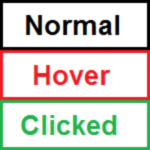

CSS sprite button
When you have a lot of small images on a web page you can combine them into one image and then use CSS to cut out the individual parts. This practice is called CSS sprites and can make your web page load faster.
I’m going to use this technique here to implement an image button with hover and clicked states. It will also degrade gracefully and does not use any JavaScript. We start with the following beauty I created in Paint:
The dimensions of this image are 150 times 150 pixels. Each box is 50 pixels high.
<a id="button" title="Explanation" href="#">Fallback text</a>We use an ordinary link as the basis for our button. This is what users who have CSS turned off will see. It should also work well with screen readers. The title attribute sets a text that is shown when the user hovers over the button. In practice it would probably be the same as the link text.
#button
{
text-indent: -5000px;
display: block;
width: 150px;
height: 50px;
background-image: url("CssSpriteButton.png");
background-position: 0 0;
}
#button:hover
{
background-position: 0 -50px;
}
#button:active
{
background-position: 0 -100px;
}In the CSS we have to set a height and width of the button. When we then set our image as the background only the first box will be shown. In the hover and active states we set the background position to a negative vertical value. This means we will show the second and third box respectively. The result is a working button:
The text indent is there to move the text out of the way. Otherwise the text would be put on top of the image. There are several other techniques to hide the text. Some of which can handle the situation where the user has CSS enabled but images disabled. Personally I don’t think it is worth the effort.
CSS sprites and background images can be used in many other ways. For example, you can make nice image maps with it.
Flickering
If you read older articles about CSS sprites, for example the one linked above, you will come across concerns about flickering. The proposed solution for this is to put the background image for the normal state in a parent tag and let the background image for the hover state cover it.
However, as far as what I’ve read this problem only exists in Internet Explorer 6 and possibly only when the cache has been turned off. Personally I would not worry about it. Even if this happens it is still perfectly usable, it just looks a bit bad.